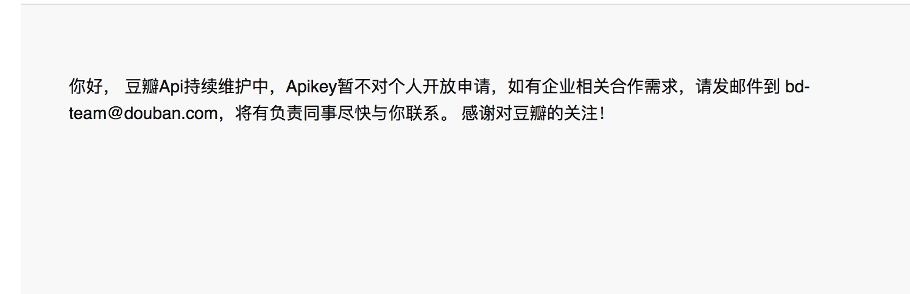
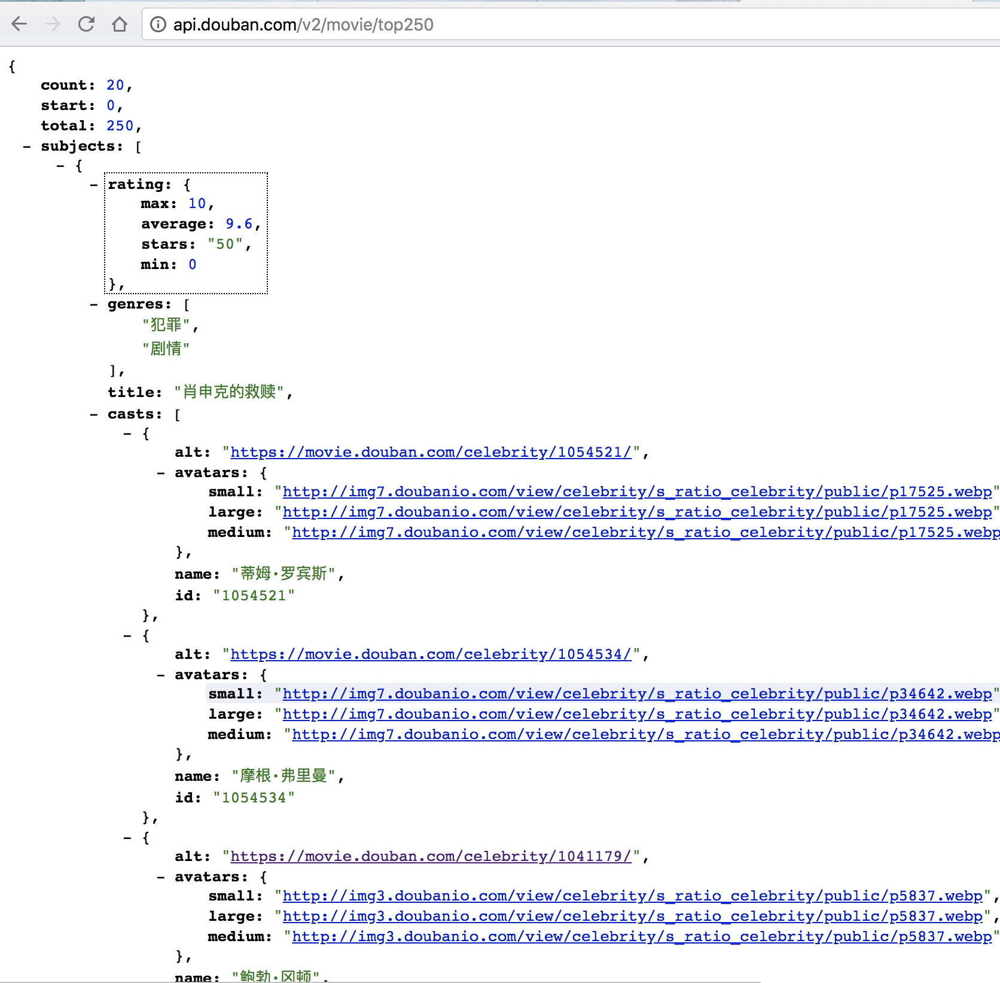
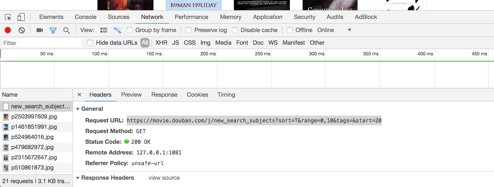
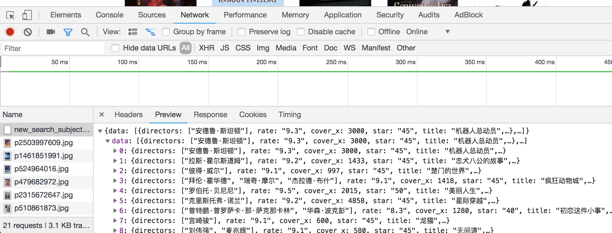
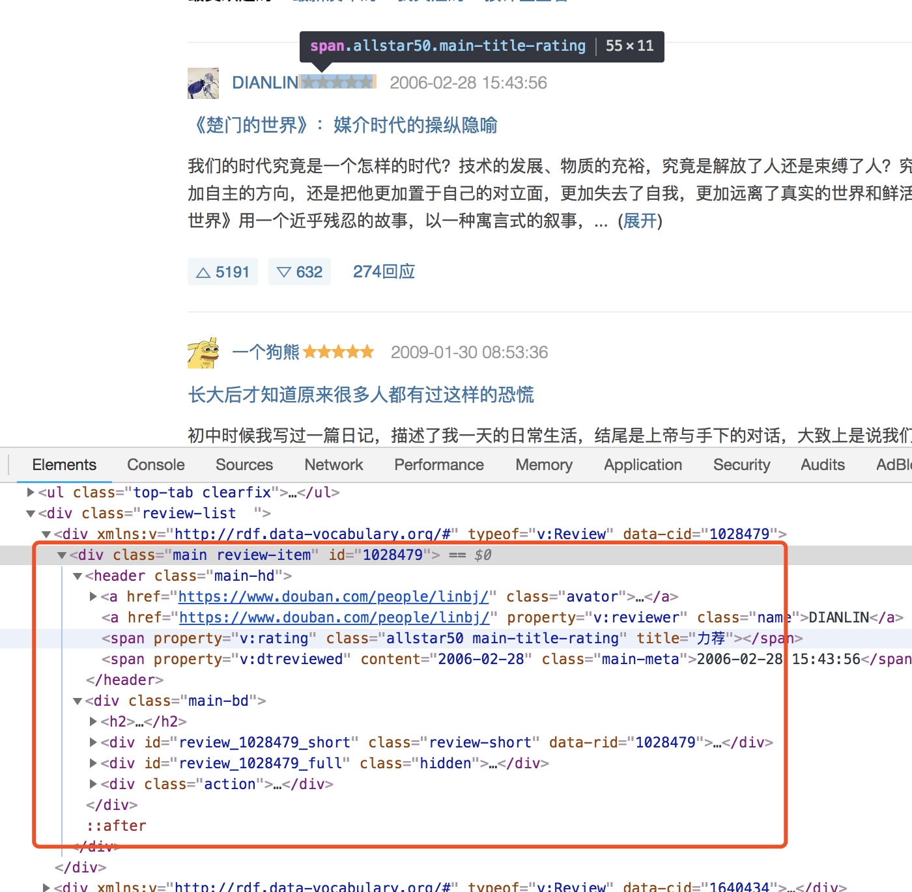
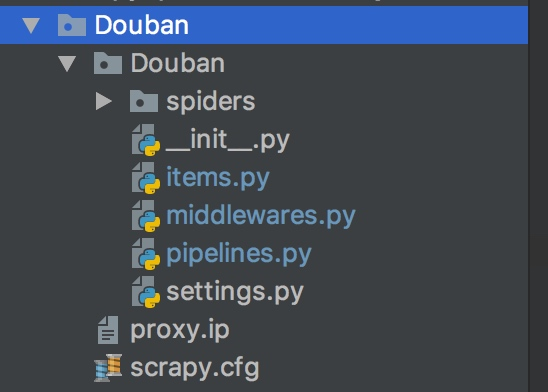
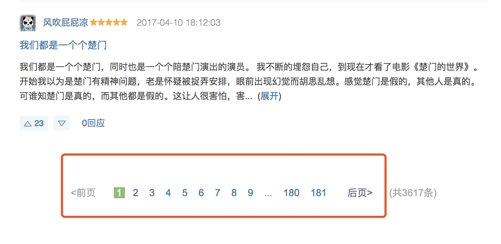

我的豆瓣电影影评抓取之旅

前言
由于最近一直在研究基于机器学习的推荐系统，需要大量的数据来训练AI模型，但是在模型的测试验证过程中，苦于中文数据集的缺失(或者说根本没有，国人在这方面做得实在是太差了)，只能利用国外公开的推荐系统数据集，有著名的MovieLens电影评分数据集和Del.icio.us链接推荐数据集，虽然通过计算损失函数也能大致的评估推荐模型的优劣程度从而进行相应的优化，但是由于语言环境、文化等等的不同，国外人对某个电影的评分毕竟跟我们还是有一定差距的，在输出推荐结果时，即使给出的某个电影或者某个网站链接其相似度很高时，我仍然不确定这个推荐结果是否真的如损失函数计算的那样准确。所以，为了能拥有一个可以用于训练的中文的数据集，就有了本文所记录的豆瓣影评的抓取过程。
网站分析
首先还是要分析一下要抓取的网站豆瓣电影,主要是通过搜索引擎或者浏览器的调试工具看看有没有可以利用的API，在没有找到任何api的前提下才开始分析网站的页面结构，找到可以提取的信息。
通过搜索引擎，我找到了豆瓣开发者平台，在豆瓣电影的文档中有获取电影，获取影评等等的详细接口，正当我以为接下来的数据采集将会变得非常简单之时，下面这张图还是让我冷静了下来

如果你在2015年之前注册过豆瓣的开发者，那么恭喜你,你可以通过豆瓣提供的API或者SDK获取你想获得的任何数据
电影信息获取
虽然APIKey是不可能拿到了，但是通过文档我仍然发现了一些GET请求并不需要AUTH认证，也就是说有没有APIKey并不影响使用。其中，对我们有用的就是获取TOP250电影列表的接口:
http://api.douban.com/v2/movie/top250
接口返回的格式大概如下:

里面包含了电影一些详细信息，对于推荐系统来说，这些数据足够了。
此外，通过利用Chrome的调试工具，在豆瓣电影-分类这个页面我发现了他们使用的一个JQuery接口,也是一个GET请求，不需要AUTH。


详细接口如下,可以通过更改start来迭代获取所有电影条目
https://movie.douban.com/j/new_search_subjects?sort=T&range=0,10&tags=&start=20
这个接口可以获取所有豆瓣上收录的电影，经过我的测试，start改为10000时，返回的数据就已经是空的了
影评信息获取
获取电影信息的方法有了，接下来就是要分析如何获取影评信息了。
在每部电影的详情页面里,如楚门的世界，我们找到了如下这几个详情页面,分别显示了针对这部电影的影评和短评信息
https://movie.douban.com/subject/1292064/reviews ##影评页面
https://movie.douban.com/subject/1292064/comments ##短评页面

照例先用调试工具看看有没有可以用的api接口后，发现这次并没有那么好运了，这个影评页面是由服务器渲染完成的。
没有了接口，我们来分析页面，依然通过调试工具:

每条评论都是在一个review-item的div块里面，而所有评论都是在一个review-list的div块里吗，我们通过xpath语法可以很容易的定位到每条评论的详细信息,下面是所有信息的xpath语句，在我们写爬虫时候就靠他提取内容了
评论列表: "//div[contains(@class,'review-list')]//div[contains(@class,'review-item')]"
评论ID: ".//div[@class='main-bd']//div[@class='review-short']/@data-rid"
作者头像: "./header[@class='main-hd']//a[@class='avator']//img/@src "
作者昵称: ".//header//a[@class='name']/text()"
推荐程度(评分): ".//header//span[contains(@class,'main-title-rating')]/@title"
影评标题: ".//div[@class='main-bd']//h2//a/text()"
影评摘要: ".//div[@class='main-bd']//div[@class='short-content']/text()"
影评详情页链接: ".//div[@class='main-bd']//h2//a/@href"

其中具体的评分我们不能直接拿到，而是只能拿到具体的文字描述,经过我的验证，具体如下对应关系如下:
'力荐': 5,
'推荐': 4,
'还行': 3,
'较差': 2,
'很差': 1,
在后续的代码编写过程中，我们会根据这个对应关系将其转换为对应的评分信息
实现爬虫
既然已经分析的差不多了，我们所需要的信息基本都有途径可以获得，那么接下来我们就开始具体的爬虫实现，我们采用Scrapy这个Python爬虫框架来帮我们简化爬虫的开发过程。Scrapy的安装以及VirtualEnv环境的搭建就不详细说了，其并不再本文的讨论范围之内，附上Scrapy的中文文档地址
创建项目工程
##创建DoubanSpider工程
scrapy startproject Douban
创建好的工程目录大致如下:

其中：
spiders: 爬虫文件夹,存放具体的爬虫代码，我们待会要编写的两个爬虫(电影信息和影评信息)就需要放在这个文件夹下
items.py: 模型类，所有需要结构化的数据都要预先在此文件中定义
middlewares.py: 中间件类，scrapy的核心之一，我们会用到其中的downloadMiddleware,
pipelines.py: 管道类，数据的输出管理，是存数据库还是存文件在这里决定
settings.py: 设置类，一些全局的爬虫设置，如果每个爬虫需要有自定义的地方，可以在爬虫中直接设置custom_settings属性
电影信息爬虫
由于电影信息的获取有API接口可以使用，所以此处页可以不采用爬虫来处理数据。
在spiders中新建一个movies.py的文件，定义我们的爬虫
由于我们爬取电影是通过api接口的形式获取，因此并不需要跟进解析，所以我们的爬虫直接继承Spider就可以了
定义爬虫
class MovieSpider(Spider):
name = 'movie' #爬虫名称
allow_dominas = ["douban.com"] #允许的域名
#自定义的爬虫设置，会覆盖全局setting中的设置
custom_settings = {
"ITEM_PIPELINES": {
'Douban.pipelines.MoviePipeline': 300
},
"DEFAULT_REQUEST_HEADERS": {
'accept': 'application/json, text/javascript, */*; q=0.01',
'accept-encoding': 'gzip, deflate',
'accept-language': 'zh-CN,zh;q=0.8,en;q=0.6,zh-TW;q=0.4',
'referer': 'https://mm.taobao.com/search_tstar_model.htm?spm=719.1001036.1998606017.2.KDdsmP',
'user-agent': 'Mozilla/5.0 (Macintosh; Intel Mac OS X 10_11_4) AppleWebKit/537.36 (KHTML, like Gecko) Chrome/48.0.2564.97 Safari/537.36',
'x-requested-with': 'XMLHttpRequest',
},
"ROBOTSTXT_OBEY":False #需要忽略ROBOTS.TXT文件
}
custom_setting中，ITEM_PIPELINES指定了获取数据后数据输出时使用的管道接口
DEFAULT_REQUEST_HEADERS则是让我们的Spider伪装成一个浏览器，防止被豆瓣拦截掉。
而ROBOTSTXT_OBEY则是让我们的爬虫忽略ROBOTS.txt的警告
接下来通过start_request告诉爬虫要爬取的链接：
def start_requests(self):
url = '''https://movie.douban.com/j/new_search_subjects?sort=T&range=0,10&tags=&start={start}'''
requests = []
for i in range(500):
request = Request(url.format(start=i*20), callback=self.parse_movie)
requests.append(request)
return requests
由于我们之前分析网站的时候已经分析过了，start参数到10000时就获取不到数据了，所以此处直接用这个数字循环获得所有链接
接下来解析每个接口返回的内容:
def parse_movie(self, response):
jsonBody = json.loads(response.body)
subjects = jsonBody['data']
movieItems = []
for subject in subjects:
item = MovieItem()
item['id'] = int(subject['id'])
item['title'] = subject['title']
item['rating'] = float(subject['rate'])
item['alt'] = subject['url']
item['image'] = subject['cover']
movieItems.append(item)
return movieItems
在request中，我们指定了一个parse_movie的方法来解析返回的内容，此处我们需要使用一个在items.py中定义的Item,具体Item如下:
定义Item
#定义你需要获取的数据
class MovieItem(scrapy.Item):
id = scrapy.Field()
title = scrapy.Field()
rating = scrapy.Field()
genres = scrapy.Field()
original_title = scrapy.Field()
alt = scrapy.Field()
image = scrapy.Field()
year = scrapy.Field()
items返回给Scrapy之后，Scrapy会调用我们之前在custom_setting中指定的Douban.pipelines.MoviePipeline来处理获取到的item，MoviePipeline定义在pipelines.py中，具体内容如下:
定义Pipeline
class MoviePipeline(object):
movieInsert = '''insert into movies(id,title,rating,genres,original_title,alt,image,year) values ('{id}','{title}','{rating}','{genres}','{original_title}','{alt}','{image}','{year}')'''
def process_item(self, item, spider):
id = item['id']
sql = 'select * from movies where id=%s'% id
self.cursor.execute(sql)
results = self.cursor.fetchall()
if len(results) > 0:
rating = item['rating']
sql = 'update movies set rating=%f' % rating
self.cursor.execute(sql)
else:
sqlinsert = self.movieInsert.format(
id=item['id'],
title=pymysql.escape_string(item['title']),
rating=item['rating'],
genres=item.get('genres'),
original_title=item.get('original_title'),
alt=pymysql.escape_string(item.get('alt')),
image=pymysql.escape_string(item.get('image')),
year=item.get('year')
)
self.cursor.execute(sqlinsert)
return item
def open_spider(self, spider):
self.connect = pymysql.connect('localhost','root','******','douban', charset='utf8', use_unicode=True)
self.cursor = self.connect.cursor()
self.connect.autocommit(True)
def close_spider(self, spider):
self.cursor.close()
self.connect.close()
在此Pipeline中，我们通过连接mysql数据库将每次获取到的item插入到具体的数据表中
运行爬虫
在命令行下输入:
scrapy crawl movie


影评爬虫
影评爬虫的难度要大很多了，因为获取电影信息我们是通过接口直接拿到的，这种接口返回的数据格式统一，基本不会出现异常情况，而且电影数量有限，很短时间就能爬取完毕，并不会触发豆瓣的防爬虫机制，而在影评爬虫的编写过程中，这些都会遇到。
爬虫逻辑
class ReviewSpider(Spider):
name = "review"
allow_domain = ['douban.com']
custom_settings = {
"ITEM_PIPELINES": {
'Douban.pipelines.ReviewPipeline': 300
},
"DEFAULT_REQUEST_HEADERS": {
'connection':'keep-alive',
'Upgrade-Insecure-Requests':'1',
'DNT':1,
'Accept':'text/html,application/xhtml+xml,application/xml;q=0.9,image/webp,image/apng,*/*;q=0.8',
'Accept-Encoding':'gzip, deflate, br',
'Accept-Language':'zh-CN,zh;q=0.9,en;q=0.8,zh-TW;q=0.7',
'Cookie':'bid=wpnjOBND4DA; ll="118159"; __utmc=30149280;', 'user-agent': 'Mozilla/5.0 (Macintosh; Intel Mac OS X 10_13_5) AppleWebKit/537.36 (KHTML, like Gecko) '
'Chrome/67.0.3396.87 Safari/537.36',
},
"ROBOTSTXT_OBEY": False,
# "DOWNLOAD_DELAY": 1,
"RETRY_TIMES": 9,
"DOWNLOAD_TIMEOUT": 10
}
对比获取电影信息的爬虫，在custom_setting中多了几个设置：
RETRY_TIMES：用来控制最大重试次数，因为豆瓣有反爬虫机制，当一个IP访问次数过多时就会限制这个IP访问，所以为了绕过这个机制，我们通过代理IP来爬取对应的页面，每爬取一个页面就更换一次IP，但是由于代理IP的质量参差不齐，收费的可能会好点，但还是会存在，为了避免出现因为代理连接不上导致某个页面被忽略掉，我们设置这个值，当重试次数大于设定的值时仍然没有获取到页面就会pass掉这个连接。如果你的代理IP质量不好，请增大此处的次数。
DOWNLOAD_TIMEOUT: 下载超时时间，默认是60秒，此处修改为10秒是想让整体的爬取速度加快，因为RETRY_TIMES的缘故，需要RETRY的判定时间为1分钟，如果有很多这种有问题的页面，那么整个爬取的过程会十分漫长。
DOWNLOAD_DELAY: 下载延迟，如果你使用代理IP之后还是会出现访问返回403的情况，请设置此值，因为某IP太频繁的访问页面会触发豆瓣的防爬虫机制。
def start_requests(self):
#从数据库中找到所有的moviesId
self.connect = pymysql.connect('localhost','root','******','douban', charset='utf8', use_unicode=True)
self.cursor = self.connect.cursor()
self.connect.autocommit(True)
sql = "select id,current_page,total_page from movies"
self.cursor.execute(sql)
results = self.cursor.fetchall()
url_format = '''https://movie.douban.com/subject/{movieId}/reviews?start={offset}'''
for row in results:
movieId = row[0]
current_page = row[1]
total_page = row[2]
if current_page != total_page: ##说明评论没有爬完
url = url_format.format(movieId=movieId, offset=current_page*20)
request = Request(url, callback=self.parse_review, meta={'movieId': movieId}, dont_filter=True)
yield request
照例，我们在start_request中告诉Scrapy要爬取的起始网址链接，通过我们之前的分析，影评页面的地址格式为:
https://movie.douban.com/subject/{movieId}/reviews?start={offset}
而movieId,我们之前的爬虫已经将所有电影的信息抓取了下来，所以我们在此先通过查询数据库将所有的已抓取的电影信息获取到，取到其中的movieId，然后构造一个页面链接。
url = url_format.format(movieId=movieId, offset=current_page*20)
因为抓取豆瓣影评的过程十分漫长，中间会出现各种各样的问题导致爬虫意外退出，因此我们需要一个机制让爬虫能从上次停止的地方继续爬取，current_page和total_page就是为此而服务的，在后面的数据解析过程中，每解析一个页面，就会将当期页面的页数存储下来，防止出现意外情况。
def parse_review(self, response):
movieId = response.request.meta['movieId']
review_list = response.xpath("//div[contains(@class,'review-list')]//div[contains(@class,'review-item')]")
for review in review_list:
item = ReviewItem()
item['id'] = review.xpath(".//div[@class='main-bd']//div[@class='review-short']/@data-rid").extract()[0]
avator = review.xpath(".//header//a[@class='avator']/@href").extract()[0]
item['username'] = avator.split('/')[-2]
item['avatar'] = review.xpath("./header[@class='main-hd']//a[@class='avator']//img/@src").extract()[0]
item['nickname'] = review.xpath(".//header//a[@class='name']/text()").extract()[0]
item['movieId'] = movieId
rate = review.xpath(".//header//span[contains(@class,'main-title-rating')]/@title").extract()
if len(rate)>0:
rate = rate[0]
item['rating'] = RATING_DICT.get(rate)
item['create_time'] = review.xpath(".//header//span[@class='main-meta']/text()").extract()[0]
item['title'] = review.xpath(".//div[@class='main-bd']//h2//a/text()").extract()[0]
item['alt'] = review.xpath(".//div[@class='main-bd']//h2//a/@href").extract()[0]
summary = review.xpath(".//div[@class='main-bd']//div[@class='short-content']/text()").extract()[0]
item['summary'] = summary.strip().replace('\n', '').replace('\xa0(','')
yield item
current_page = response.xpath("//span[@class='thispage']/text()").extract()
total_page = response.xpath("//span[@class='thispage']/@data-total-page").extract()
paginator = response.xpath("//div[@class='paginator']").extract()
if len(paginator) == 0 and len(review_list): ##不存在导航条，但是评论列表存在，说明评论只有一页
sql = "update movies set current_page = 1, total_page=1 where id='%s'" % movieId
self.cursor.execute(sql)
elif len(paginator) and len(review_list):
current_page = int(current_page[0])
total_page = int(total_page[0])
sql = "update movies set current_page = %d, total_page=%d where id='%s'" % (current_page, total_page, movieId)
self.cursor.execute(sql)
if current_page != total_page:
url_format = '''https://movie.douban.com/subject/{movieId}/reviews?start={offset}'''
next_request = Request(url_format.format(movieId=movieId, offset=current_page*20),
callback=self.parse_review,
dont_filter=True, meta={'movieId': movieId})
yield next_request
else:
yield response.request
接下来，分析解析函数，DoubanItem的数据获取就不额外介绍了，利用之前分析时用到的xpath语句可以很容易的定义到具体内容。
其中movieId是起始链接中通过Request中Meta属性传递过来的，当然你可以通过分析网页找到包含movieId的地方。
current_page = response.xpath("//span[@class='thispage']/text()").extract()
total_page = response.xpath("//span[@class='thispage']/@data-total-page").extract()
paginator = response.xpath("//div[@class='paginator']").extract()
上面基础代码的作用主要是为了获取影评页面的底部导航条

但是这个导航条会有两种情况获取不到:
1. 当某个电影的评论不足20条时，也就是只有一页评论。
2. 当触发了豆瓣的反爬虫的机制时，返回的页面并不是评论页面，而是一个验证页面，自然也找不到导航条
所以在下面的代码中，我通过这几个变量来判断了以上几种情况：
1. 情况1时，不需要继续爬取剩下的评论，直接将current_page和total_page设置为1保存到movie表即可
2. 情况2时，由于此时触发了反爬虫机制，返回的页面没有我们的数据，如果我们直接忽略掉的话，会损失大量的数据（这种情况很常见），所以我们就干脆再试一次，返回request，让Scrapy重新爬取这个页面，因为每次重新爬取都会换一个新的代理IP，所以我们有很大概率下次抓取就是正常的。此处有一点需要注意：因为Scrapy默认会过滤掉重复请求，所以我们需要在构造Request的时候讲dont_filter参数设置为True,让其不要过滤重复链接。
3. 正常情况时，通过xpath语法获取的下一页评论的链接地址然后构造一个request交给Scrapy继续爬取
影评下载中间件
上面说过，抓取影评页面时需要通过使用代理IP的方式来达到绕过豆瓣的反爬虫机制，具体代理的设置就需要在DownloadMiddleware中设置
class DoubanDownloaderMiddleware(object):
# Not all methods need to be defined. If a method is not defined,
# scrapy acts as if the downloader middleware does not modify the
# passed objects.
ip_list = None
@classmethod
def from_crawler(cls, crawler):
# This method is used by Scrapy to create your spiders.
s = cls()
crawler.signals.connect(s.spider_opened, signal=signals.spider_opened)
return s
def process_request(self, request, spider):
# Called for each request that goes through the downloader
# middleware.
# Must either:
# - return None: continue processing this request
# - or return a Response object
# - or return a Request object
# - or raise IgnoreRequest: process_exception() methods of
# installed downloader middleware will be called
if self.ip_list is None or len(self.ip_list) == 0:
response = requests.request('get','http://api3.xiguadaili.com/ip/?tid=555688914990728&num=10&protocol=https').text
self.ip_list = response.split('\r\n')
ip = random.choice(self.ip_list)
request.meta['proxy'] = "https://"+ip
print("当前proxy:%s" % ip)
self.ip_list.remove(ip)
return None
def process_response(self, request, response, spider):
# Called with the response returned from the downloader.
# Must either;
# - return a Response object
# - return a Request object
# # - or raise IgnoreRequest
if response.status == 403:
res = parse.urlparse(request.url)
res = parse.parse_qs(res.query)
url = res.get('r')
if url and len(url) > 0 :
request = request.replace(url=res['r'][0])
return request
return response
其中主要就要实现两个函数，process_request和process_response，前者是每次爬取页面前Scrapy会调用这个函数，后者则是每次爬取完页面之后调用。
在前者方法里，我们通过调用一个在线的代理ip获取接口，获取一个代理IP，然后设置request的proxy属性达到更换代理的功能，当然，你也可以通过文件读取代理IP。
在后者的方法里，我们判断了状态码为403的状况，因为这个状态码标识当前的request被反爬虫禁止侦测并禁止了，而我们要做的就是把这个禁止的request地址重新包装下放到Scrapy的爬取队列当中。
影评Item
class ReviewItem(scrapy.Item):
id = scrapy.Field()
username = scrapy.Field()
nickname = scrapy.Field()
avatar = scrapy.Field()
movieId = scrapy.Field()
rating = scrapy.Field()
create_time = scrapy.Field()
title = scrapy.Field()
summary = scrapy.Field()
alt = scrapy.Field()
没啥好说的，想存啥就写啥
影评Pipeline
class ReviewPipeline(object):
reviewInsert = '''insert into reviews(id,username,nickname,avatar,summary,title,movieId,rating,create_time,alt) values ("{id}","{username}", "{nickname}","{avatar}", "{summary}","{title}","{movieId}","{rating}","{create_time}","{alt}")'''
def process_item(self, item, spider):
sql_insert = self.reviewInsert.format(
id=item['id'],
username=pymysql.escape_string(item['username']),
nickname=pymysql.escape_string(item['nickname']),
avatar=pymysql.escape_string(item['avatar']),
summary=pymysql.escape_string(item['summary']),
title=pymysql.escape_string(item['title']),
rating=item['rating'],
movieId=item['movieId'],
create_time=pymysql.escape_string(item['create_time']),
alt=pymysql.escape_string(item['alt'])
)
print("SQL:", sql_insert)
self.cursor.execute(sql_insert)
return item
def open_spider(self, spider):
self.connect = pymysql.connect('localhost','root','******','douban', charset='utf8', use_unicode=True)
self.cursor = self.connect.cursor()
self.connect.autocommit(True)
def close_spider(self, spider):
self.cursor.close()
self.connect.close()
和之前的电影的pipeline类似，就是基本的数据库写操作。
运行爬虫
scrapy crawl review
在我写完这篇文章时，影评的爬虫仍然还在爬取当中：

查看数据库，已经有97W的数据了:


如果你觉得我的文章对你有帮助，请赞助一杯☕️